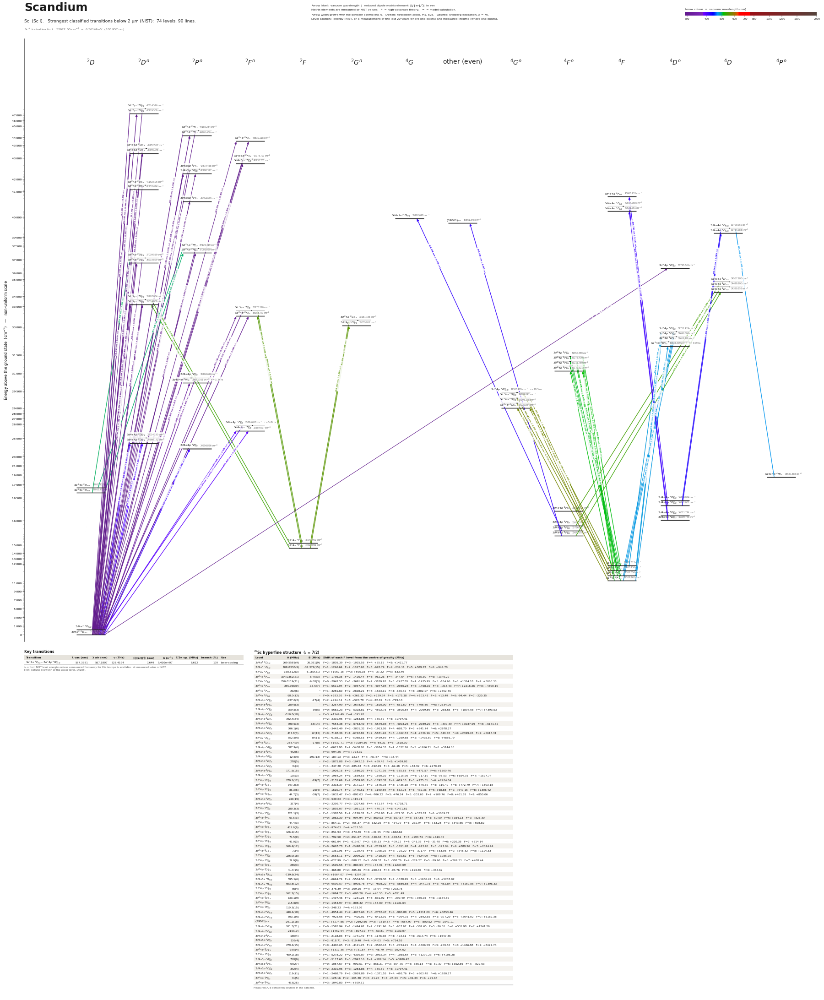

Scandium energy level diagram
Energy levels and transitions of neutral scandium (Sc I): the 90 strongest classified lines below 2 µm from the NIST Atomic Spectra Database and the 74 levels they connect, each line with its vacuum wavelength, frequency and, for 90 of them, the reduced dipole matrix element derived from the NIST transition rate. Measured lifetimes, transition rates, hyperfine constants and isotope shifts from the literature are included, each with its citation.
Hover a line or a level to isolate it, click to keep it selected. Scroll to zoom, drag to move.

Download: diagram (PDF) diagram (SVG) transitions (CSV) levels (CSV) source code

Key transitions of scandium
| Transition | λ vac (nm) | λ air (nm) | ν (THz) | |⟨J‖er‖J′⟩| (ea₀) | A (s⁻¹) | Γ/2π up. (MHz) | branch (%) | Use |
|---|---|---|---|---|---|---|---|---|
| 3d24s 4F9/2 – 3d24p 4G°11/2 | 567.3381 | 567.1807 | 528.4194 | 7.649 | 5.410e+07 | 8.612 | 100 | laser-cooling |
λ, ν from NIST level energies unless a measured frequency for this isotope is available. A: measured value or NIST. Γ/2π: natural linewidth of the upper level, 1/(2πτ).
45Sc hyperfine structure (I = 7/2)
| Level | A (MHz) | B (MHz) | Shift of each F level from the centre of gravity (MHz) |
|---|---|---|---|
| 3d4s2 2D3/2 | 269.5581(9) | 26.361(9) | F=2: -1805.39 F=3: -1015.55 F=4: +55.15 F=5: +1421.77 |
| 3d4s2 2D5/2 | 109.0330(9) | -37.372(15) | F=1: -1246.64 F=2: -1017.90 F=3: -678.79 F=4: -234.11 F=5: +309.72 F=6: +944.70 |
| 3d24s 4F3/2 | -158.512(3) | -5.189(21) | F=2: +1067.18 F=3: +595.35 F=4: -37.22 F=5: -833.49 |
| 3d24s 4F5/2 | 154.0352(21) | -6.45(3) | F=1: -1736.35 F=2: -1426.44 F=3: -962.26 F=4: -344.64 F=5: +425.30 F=6: +1346.20 |
| 3d24s 4F7/2 | 250.0119(21) | -9.08(3) | F=0: -3942.55 F=1: -3691.61 F=2: -3189.92 F=3: -2437.85 F=4: -1435.95 F=5: -184.96 F=6: +1314.18 F=7: +3060.38 |
| 3d24s 4F9/2 | 285.966(9) | -15.5(7) | F=1: -5511.94 F=2: -4937.79 F=3: -4077.04 F=4: -2930.23 F=5: -1498.10 F=6: +218.43 F=7: +2218.26 F=8: +4500.10 |
| 3d24s 2F5/2 | 292(6) | – | F=1: -3281.60 F=2: -2698.21 F=3: -1823.11 F=4: -656.32 F=5: +802.17 F=6: +2552.36 |
| 3d24s 2F7/2 | -18.0(12) | – | F=0: +283.30 F=1: +265.32 F=2: +229.34 F=3: +175.38 F=4: +103.43 F=5: +13.49 F=6: -94.44 F=7: -220.35 |
| 3d4s4p 4F°3/2 | -137.6(3) | -27(4) | F=2: +914.54 F=3: +520.78 F=4: -22.01 F=5: -729.10 |
| 3d4s4p 4F°5/2 | 289.6(3) | – | F=1: -3257.99 F=2: -2678.80 F=3: -1810.00 F=4: -651.60 F=5: +796.40 F=6: +2534.00 |
| 3d4s4p 4F°7/2 | 359.5(3) | -39(5) | F=0: -5682.23 F=1: -5318.81 F=2: -4592.75 F=3: -3505.64 F=4: -2059.89 F=5: -258.65 F=6: +1894.08 F=7: +4393.53 |
| 3d4s4p 4D°1/2 | -510.8(18) | – | F=3: +1149.40 F=4: -893.98 |
| 3d4s4p 4D°3/2 | 342.4(24) | – | F=2: -2310.95 F=3: -1283.86 F=4: +85.59 F=5: +1797.41 |
| 3d4s4p 4F°9/2 | 390.9(3) | -63(14) | F=1: -7554.38 F=2: -6763.49 F=3: -5579.03 F=4: -4003.26 F=5: -2039.20 F=6: +309.39 F=7: +3037.99 F=8: +6141.32 |
| 3d4s4p 4D°5/2 | 306.1(6) | – | F=1: -3443.49 F=2: -2831.32 F=3: -1913.05 F=4: -688.70 F=5: +841.74 F=6: +2678.27 |
| 3d4s4p 4D°7/2 | 457.8(3) | 22(12) | F=0: -7198.36 F=1: -6742.81 F=2: -5831.26 F=3: -4462.83 F=4: -2636.16 F=5: -349.48 F=6: +2399.45 F=7: +5613.31 |
| 3d24s 2D5/2 | 552.5(6) | 89(11) | F=1: -6168.12 F=2: -5088.53 F=3: -3459.59 F=4: -1269.88 F=5: +1495.89 F=6: +4856.79 |
| 3d24s 2D3/2 | -288.4(9) | -17(8) | F=2: +1937.71 F=3: +1084.50 F=4: -64.31 F=5: -1518.30 |
| 3d4s4p 4P°5/2 | 587.9(6) | – | F=1: -6613.80 F=2: -5438.01 F=3: -3674.33 F=4: -1322.76 F=5: +1616.71 F=6: +5144.06 |
| 3d4s4p 2P°1/2 | 442(5) | – | F=3: -994.26 F=4: +773.32 |
| 3d4s4p 2P°3/2 | 12.6(9) | -191(13) | F=2: -187.13 F=3: -13.17 F=4: +91.67 F=5: +18.44 |
| 3d4s4p 2D°3/2 | 278(5) | – | F=2: -1875.88 F=3: -1042.15 F=4: +69.48 F=5: +1459.02 |
| 3d4s4p 2D°5/2 | 31(4) | – | F=1: -347.38 F=2: -285.63 F=3: -192.99 F=4: -69.48 F=5: +84.92 F=6: +270.19 |
| 3d4s4p 2F°5/2 | 171.5(15) | – | F=1: -1929.16 F=2: -1586.20 F=3: -1071.76 F=4: -385.83 F=5: +471.57 F=6: +1500.46 |
| 3d4s4p 2F°7/2 | 125(3) | – | F=0: -1964.24 F=1: -1839.53 F=2: -1590.10 F=3: -1215.96 F=4: -717.10 F=5: -93.53 F=6: +654.75 F=7: +1527.74 |
| 3d24p 4G°5/2 | 279.1(12) | -29(7) | F=1: -3155.69 F=2: -2589.08 F=3: -1742.32 F=4: -619.18 F=5: +775.31 F=6: +2434.84 |
| 3d24p 4G°7/2 | 147.2(3) | – | F=0: -2318.37 F=1: -2171.17 F=2: -1876.78 F=3: -1435.18 F=4: -846.39 F=5: -110.40 F=6: +772.79 F=7: +1803.18 |
| 3d24p 4G°9/2 | 83.3(6) | -25(4) | F=1: -1615.74 F=2: -1445.51 F=3: -1190.89 F=4: -852.78 F=5: -432.36 F=6: +68.88 F=7: +649.16 F=8: +1306.42 |
| 3d24p 4G°11/2 | 44.7(3) | -39(7) | F=2: -1032.47 F=3: -892.03 F=4: -706.22 F=5: -476.24 F=6: -203.63 F=7: +109.76 F=8: +461.81 F=9: +850.06 |
| 3d4s4p 2P°1/2 | 240(19) | – | F=3: -539.63 F=4: +419.71 |
| 3d4s4p 2P°3/2 | 327(4) | – | F=2: -2209.77 F=3: -1227.65 F=4: +81.84 F=5: +1718.71 |
| 3d24p 4F°3/2 | 280.3(3) | – | F=2: -1892.07 F=3: -1051.15 F=4: +70.08 F=5: +1471.61 |
| 3d24p 4F°5/2 | 121.1(3) | – | F=1: -1362.56 F=2: -1120.32 F=3: -756.98 F=4: -272.51 F=5: +333.07 F=6: +1059.77 |
| 3d24p 4F°7/2 | 67.5(3) | – | F=0: -1062.39 F=1: -994.94 F=2: -860.03 F=3: -657.67 F=4: -387.86 F=5: -50.59 F=6: +354.13 F=7: +826.30 |
| 3d24p 4F°9/2 | 44.4(3) | – | F=1: -854.11 F=2: -765.37 F=3: -632.26 F=4: -454.79 F=5: -232.94 F=6: +33.28 F=7: +343.86 F=8: +698.82 |
| 3d24p 4D°1/2 | 432.9(9) | – | F=3: -974.03 F=4: +757.58 |
| 3d24p 4D°3/2 | 126.2(15) | – | F=2: -851.93 F=3: -473.30 F=4: +31.55 F=5: +662.62 |
| 3d24p 4D°5/2 | 70.5(9) | – | F=1: -792.58 F=2: -651.67 F=3: -440.32 F=4: -158.51 F=5: +193.74 F=6: +616.45 |
| 3d24p 4D°7/2 | 42.0(3) | – | F=0: -661.04 F=1: -619.07 F=2: -535.13 F=3: -409.22 F=4: -241.33 F=5: -31.48 F=6: +220.35 F=7: +514.14 |
| 3d24p 2G°7/2 | 169.4(12) | – | F=0: -2667.78 F=1: -2498.39 F=2: -2159.63 F=3: -1651.48 F=4: -973.95 F=5: -127.04 F=6: +889.26 F=7: +2074.94 |
| 3d24p 2G°9/2 | 71(4) | – | F=1: -1361.96 F=2: -1220.45 F=3: -1008.20 F=4: -725.20 F=5: -371.44 F=6: +53.06 F=7: +548.32 F=8: +1114.33 |
| 3d24p 2F°5/2 | 226.9(18) | – | F=1: -2553.11 F=2: -2099.22 F=3: -1418.39 F=4: -510.62 F=5: +624.09 F=6: +1985.75 |
| 3d24p 2F°7/2 | 39.9(6) | – | F=0: -627.99 F=1: -588.12 F=2: -508.37 F=3: -388.76 F=4: -229.27 F=5: -29.90 F=6: +209.33 F=7: +488.44 |
| 3d24p 2D°3/2 | 236(3) | – | F=2: -1590.55 F=3: -883.64 F=4: +58.91 F=5: +1237.09 |
| 3d24p 2D°5/2 | 41.7(15) | – | F=1: -468.80 F=2: -385.46 F=3: -260.44 F=4: -93.76 F=5: +114.60 F=6: +364.62 |
| 3d4s5s 4D1/2 | -739.6(24) | – | F=3: +1664.07 F=4: -1294.28 |
| 3d4s5s 4D5/2 | 595.1(6) | – | F=1: -6694.74 F=2: -5504.56 F=3: -3719.30 F=4: -1338.95 F=5: +1636.49 F=6: +5207.02 |
| 3d4s5s 4D7/2 | 603.8(12) | – | F=0: -9509.57 F=1: -8905.78 F=2: -7698.22 F=3: -5886.88 F=4: -3471.75 F=5: -452.84 F=6: +3169.86 F=7: +7396.33 |
| 3d24p 4D°3/2 | 56(4) | – | F=2: -376.39 F=3: -209.10 F=4: +13.94 F=5: +292.75 |
| 3d24p 2D°3/2 | 162.2(15) | – | F=2: -1094.77 F=3: -608.20 F=4: +40.55 F=5: +851.49 |
| 3d24p 2D°5/2 | 133.1(9) | – | F=1: -1497.46 F=2: -1231.25 F=3: -831.92 F=4: -299.49 F=5: +366.05 F=6: +1164.69 |
| 3d24p 2P°3/2 | 215.6(9) | – | F=2: -1454.97 F=3: -808.32 F=4: +53.89 F=5: +1131.64 |
| 3d24p 2P°1/2 | 110.3(15) | – | F=3: -248.23 F=4: +193.07 |
| 3d4s4d 4D5/2 | 440.4(18) | – | F=1: -4954.44 F=2: -4073.66 F=3: -2752.47 F=4: -990.89 F=5: +1211.09 F=6: +3853.46 |
| 3d4s4d 4D7/2 | 503.1(6) | – | F=0: -7923.06 F=1: -7420.01 F=2: -6413.91 F=3: -4904.75 F=4: -2892.55 F=5: -377.29 F=6: +2641.02 F=7: +6162.38 |
| (39861)5/2 | -291.1(18) | – | F=1: +3274.86 F=2: +2692.66 F=3: +1819.37 F=4: +654.97 F=5: -800.52 F=6: -2547.11 |
| 3d4s4d 4G7/2 | 101.3(21) | – | F=0: -1595.94 F=1: -1494.62 F=2: -1291.96 F=3: -987.97 F=4: -582.65 F=5: -76.00 F=6: +531.98 F=7: +1241.29 |
| 3d4s4d 4F3/2 | -215(10) | – | F=2: +1452.94 F=3: +807.19 F=4: -53.81 F=5: -1130.07 |
| 3d4s4d 4F5/2 | 188(4) | – | F=1: -2118.03 F=2: -1741.49 F=3: -1176.68 F=4: -423.61 F=5: +517.74 F=6: +1647.36 |
| 3d4s5p 2P°3/2 | 136(4) | – | F=2: -918.71 F=3: -510.40 F=4: +34.03 F=5: +714.55 |
| 3d4s4d 4F7/2 | 279.4(15) | – | F=0: -4400.65 F=1: -4121.25 F=2: -3562.43 F=3: -2724.21 F=4: -1606.59 F=5: -209.56 F=6: +1466.88 F=7: +3422.73 |
| 3d24p 2D°3/2 | -195(4) | – | F=2: +1317.36 F=3: +731.87 F=4: -48.79 F=5: -1024.62 |
| 3d24p 2D°5/2 | 469.2(18) | – | F=1: -5278.22 F=2: -4339.87 F=3: -2932.34 F=4: -1055.64 F=5: +1290.23 F=6: +4105.28 |
| 3d4s5p 2P°3/2 | 758(9) | – | F=2: -5117.68 F=3: -2843.16 F=4: +189.54 F=5: +3980.42 |
| 3d4s5p 2F°7/2 | 67(27) | – | F=0: -1057.67 F=1: -990.51 F=2: -856.21 F=3: -654.75 F=4: -386.13 F=5: -50.37 F=6: +352.56 F=7: +822.63 |
| 3d4s5p 2D°3/2 | 342(4) | – | F=2: -2310.95 F=3: -1283.86 F=4: +85.59 F=5: +1797.41 |
| 3d4s5p 2D°5/2 | 219(11) | – | F=1: -2468.79 F=2: -2029.89 F=3: -1371.55 F=4: -493.76 F=5: +603.48 F=6: +1920.17 |
| 3d24p 2F°5/2 | 11(5) | – | F=1: -128.16 F=2: -105.38 F=3: -71.20 F=4: -25.63 F=5: +31.33 F=6: +99.68 |
| 3d24p 2P°1/2 | 463(28) | – | F=3: -1040.80 F=4: +809.51 |
Measured A, B constants; sources in the data file.
Listed Sc transitions below 2 µm
| Lower level | Upper level | λ vacuum (nm) | λ air (nm) | ν (THz) | Type | |⟨J‖er‖J′⟩| (ea₀) | A (s⁻¹) | Branching (%) | Source of matrix element / A |
|---|---|---|---|---|---|---|---|---|---|
| 3d4s2 2D3/2 | 3d25p 2D°5/2 | 211.3516 | 211.2847 | 1418.4538 | E1 | 0.299 NIST | 3.200e+06 NIST | – | NIST ASD (accuracy C) |
| 3d4s2 2D3/2 | 3d25p 2D°3/2 | 211.7320 | 211.6651 | 1415.9051 | E1 | 0.612 NIST | 2.000e+07 NIST | – | NIST ASD (accuracy C) |
| 3d4s2 2D5/2 | 3d25p 2D°5/2 | 212.1062 | 212.0392 | 1413.4072 | E1 | 0.752 NIST | 2.000e+07 NIST | – | NIST ASD (accuracy C) |
| 3d4s2 2D3/2 | 3d24p 2P°3/2 | 226.2992 | 226.2292 | 1324.7614 | E1 | 0.364 NIST | 5.800e+06 NIST | – | NIST ASD (accuracy C) |
| 3d4s2 2D3/2 | 3d24p 2P°1/2 | 226.7295 | 226.6593 | 1322.2475 | E1 | 0.743 NIST | 4.800e+07 NIST | – | NIST ASD (accuracy C) |
| 3d4s2 2D5/2 | 3d24p 2P°3/2 | 227.1646 | 227.0944 | 1319.7148 | E1 | 1.032 NIST | 4.600e+07 NIST | – | NIST ASD (accuracy C) |
| 3d4s2 2D3/2 | 3d24p 2F°5/2 | 228.1536 | 228.0832 | 1313.9939 | E1 | 0.992 NIST | 2.800e+07 NIST | – | NIST ASD (accuracy C) |
| 3d4s2 2D5/2 | 3d24p 2F°5/2 | 229.0333 | 228.9627 | 1308.9473 | E1 | 0.382 NIST | 4.100e+06 NIST | – | NIST ASD (accuracy C) |
| 3d4s2 2D3/2 | 3d4s5p 2D°5/2 | 231.2002 | 231.1291 | 1296.6790 | E1 | 0.387 NIST | 4.100e+06 NIST | – | NIST ASD (accuracy C) |
| 3d4s2 2D3/2 | 3d4s5p 2D°3/2 | 231.6400 | 231.5688 | 1294.2172 | E1 | 0.783 NIST | 2.500e+07 NIST | – | NIST ASD (accuracy C) |
| 3d4s2 2D5/2 | 3d4s5p 2D°5/2 | 232.1035 | 232.0323 | 1291.6324 | E1 | 0.943 NIST | 2.400e+07 NIST | – | NIST ASD (accuracy C) |
| 3d4s2 2D5/2 | 3d4s5p 2D°3/2 | 232.5468 | 232.4754 | 1289.1706 | E1 | 0.319 NIST | 4.100e+06 NIST | – | NIST ASD (accuracy C) |
| 3d4s2 2D3/2 | 3d4s5p 2F°5/2 | 232.8897 | 232.8183 | 1287.2722 | E1 | 0.415 NIST | 4.600e+06 NIST | – | NIST ASD (accuracy C) |
| 3d4s2 2D3/2 | 3d4s5p 2P°1/2 | 233.5387 | 233.4671 | 1283.6951 | E1 | 0.462 NIST | 1.700e+07 NIST | – | NIST ASD (accuracy C) |
| 3d4s2 2D5/2 | 3d4s5p 2F°7/2 | 233.5878 | 233.5162 | 1283.4254 | E1 | 0.426 NIST | 3.600e+06 NIST | – | NIST ASD (accuracy C) |
| 3d4s2 2D3/2 | 3d4s5p 2P°3/2 | 233.7519 | 233.6803 | 1282.5240 | E1 | 0.305 NIST | 3.700e+06 NIST | – | NIST ASD (accuracy C) |
| 3d4s2 2D5/2 | 3d4s5p 2P°3/2 | 234.6753 | 234.6035 | 1277.4774 | E1 | 0.576 NIST | 1.300e+07 NIST | – | NIST ASD (accuracy C) |
| 3d4s2 2D3/2 | 3d24p 2D°5/2 | 242.9395 | 242.8658 | 1234.0209 | E1 | 0.296 NIST | 2.070e+06 NIST | – | NIST ASD (accuracy C) |
| 3d4s2 2D3/2 | 3d24p 2D°3/2 | 242.9932 | 242.9195 | 1233.7483 | E1 | 0.894 NIST | 2.820e+07 NIST | – | NIST ASD (accuracy C) |
| 3d4s2 2D5/2 | 3d24p 2D°5/2 | 243.9371 | 243.8632 | 1228.9743 | E1 | 0.950 NIST | 2.100e+07 NIST | – | NIST ASD (accuracy C) |
| 3d4s2 2D5/2 | 3d4s5p 2P°3/2 | 247.3675 | 247.2928 | 1211.9314 | E1 | 0.295 NIST | 2.920e+06 NIST | – | NIST ASD (accuracy C) |
| 3d4s2 2D3/2 | 3d24p 2P°1/2 | 269.3572 | 269.2773 | 1112.9921 | E1 | 0.547 measured | 1.550e+07 measured | – | Lawler, Hala, Sneden, Nave, Wood, Cowan, ApJS 241, 21 (2019), Table 3 |
| 3d4s2 2D3/2 | 3d24p 2D°5/2 | 269.9816 | 269.9015 | 1110.4180 | E1 | 0.350 measured | 2.100e+06 measured | – | Lawler, Hala, Sneden, Nave, Wood, Cowan, ApJS 241, 21 (2019), Table 3 |
| 3d4s2 2D3/2 | 3d24p 2D°3/2 | 270.7540 | 270.6737 | 1107.2504 | E1 | 1.141 measured | 3.320e+07 measured | – | Lawler, Hala, Sneden, Nave, Wood, Cowan, ApJS 241, 21 (2019), Table 3 |
| 3d4s2 2D5/2 | 3d24p 2P°3/2 | 270.8729 | 270.7926 | 1106.7643 | E1 | 0.833 measured | 1.770e+07 measured | – | Lawler, Hala, Sneden, Nave, Wood, Cowan, ApJS 241, 21 (2019), Table 3 |
| 3d4s2 2D5/2 | 3d24p 2D°5/2 | 271.2142 | 271.1338 | 1105.3714 | E1 | 1.438 measured | 3.500e+07 measured | – | Lawler, Hala, Sneden, Nave, Wood, Cowan, ApJS 241, 21 (2019), Table 3 |
| 3d4s2 2D3/2 | 3d24p 4D°3/2 | 271.7861 | 271.7055 | 1103.0457 | E1 (intercombination) | 0.377 NIST | 3.580e+06 NIST | – | NIST ASD (accuracy C) |
| 3d4s2 2D3/2 | 3d24p 2D°5/2 | 296.6740 | 296.5874 | 1010.5115 | E1 | 0.830 measured | 8.900e+06 measured | – | Lawler, Hala, Sneden, Nave, Wood, Cowan, ApJS 241, 21 (2019), Table 3 |
| 3d4s2 2D3/2 | 3d24p 2D°3/2 | 297.4874 | 297.4006 | 1007.7484 | E1 | 1.675 measured | 5.400e+07 measured | – | Lawler, Hala, Sneden, Nave, Wood, Cowan, ApJS 241, 21 (2019), Table 3 |
| 3d4s2 2D5/2 | 3d24p 2D°5/2 | 298.1630 | 298.0761 | 1005.4648 | E1 | 2.097 measured | 5.600e+07 measured | – | Lawler, Hala, Sneden, Nave, Wood, Cowan, ApJS 241, 21 (2019), Table 3 |
| 3d4s2 2D5/2 | 3d24p 2D°3/2 | 298.9847 | 298.8975 | 1002.7018 | E1 | 0.586 measured | 6.500e+06 measured | – | Lawler, Hala, Sneden, Nave, Wood, Cowan, ApJS 241, 21 (2019), Table 3 |
| 3d4s2 2D3/2 | 3d24p 2F°5/2 | 301.6247 | 301.5369 | 993.9253 | E1 | 2.628 measured | 8.500e+07 measured | – | Lawler, Hala, Sneden, Nave, Wood, Cowan, ApJS 241, 21 (2019), Table 3 |
| 3d4s2 2D5/2 | 3d24p 2F°7/2 | 302.0233 | 301.9353 | 992.6138 | E1 | 3.163 measured | 9.200e+07 measured | – | Lawler, Hala, Sneden, Nave, Wood, Cowan, ApJS 241, 21 (2019), Table 3 |
| 3d4s2 2D5/2 | 3d24p 2F°5/2 | 303.1640 | 303.0758 | 988.8787 | E1 | 0.935 measured | 1.060e+07 measured | – | Lawler, Hala, Sneden, Nave, Wood, Cowan, ApJS 241, 21 (2019), Table 3 |
| 3d4s2 2D3/2 | 3d4s4p 2P°3/2 | 325.6619 | 325.5680 | 920.5636 | E1 | 1.466 measured | 3.150e+07 measured | – | Lawler, Hala, Sneden, Nave, Wood, Cowan, ApJS 241, 21 (2019), Table 3 |
| 3d4s2 2D3/2 | 3d4s4p 2P°1/2 | 327.0842 | 326.9900 | 916.5604 | E1 | 3.288 measured | 3.130e+08 measured | 100 | Lawler, Hala, Sneden, Nave, Wood, Cowan, ApJS 241, 21 (2019), Table 3 |
| 3d4s2 2D5/2 | 3d4s4p 2P°3/2 | 327.4570 | 327.3627 | 915.5170 | E1 | 4.413 measured | 2.810e+08 measured | – | Lawler, Hala, Sneden, Nave, Wood, Cowan, ApJS 241, 21 (2019), Table 3 |
| 3d4s2 2D3/2 | 3d4s4p 2F°5/2 | 390.8597 | 390.7490 | 767.0078 | E1 | 5.402 measured | 1.650e+08 measured | – | Lawler, Hala, Sneden, Nave, Wood, Cowan, ApJS 241, 21 (2019), Table 3 |
| 3d4s2 2D5/2 | 3d4s4p 2F°7/2 | 391.2926 | 391.1818 | 766.1592 | E1 | 6.471 measured | 1.770e+08 measured | 100 | Lawler, Hala, Sneden, Nave, Wood, Cowan, ApJS 241, 21 (2019), Table 3 |
| 3d4s2 2D5/2 | 3d4s4p 2F°5/2 | 393.4485 | 393.3371 | 761.9612 | E1 | 1.688 measured | 1.580e+07 measured | – | Lawler, Hala, Sneden, Nave, Wood, Cowan, ApJS 241, 21 (2019), Table 3 |
| 3d4s2 2D3/2 | 3d4s4p 2D°5/2 | 399.7731 | 399.6601 | 749.9066 | E1 | 1.767 measured | 1.650e+07 measured | – | Lawler, Hala, Sneden, Nave, Wood, Cowan, ApJS 241, 21 (2019), Table 3 |
| 3d4s2 2D3/2 | 3d4s4p 2D°3/2 | 402.1528 | 402.0391 | 745.4691 | E1 | 4.575 measured | 1.630e+08 measured | – | Lawler, Hala, Sneden, Nave, Wood, Cowan, ApJS 241, 21 (2019), Table 3 |
| 3d4s2 2D5/2 | 3d4s4p 2D°5/2 | 402.4817 | 402.3679 | 744.8599 | E1 | 5.644 measured | 1.650e+08 measured | – | Lawler, Hala, Sneden, Nave, Wood, Cowan, ApJS 241, 21 (2019), Table 3 |
| 3d4s2 2D5/2 | 3d4s4p 2D°3/2 | 404.8938 | 404.7794 | 740.4225 | E1 | 1.416 measured | 1.530e+07 measured | – | Lawler, Hala, Sneden, Nave, Wood, Cowan, ApJS 241, 21 (2019), Table 3 |
| 3d4s2 2D3/2 | 3d4s4p 2P°1/2 | 405.5691 | 405.4546 | 739.1896 | E1 | 1.714 NIST | 4.460e+07 NIST | – | NIST ASD (accuracy C) |
| 3d4s4p 4D°3/2 | 3d4s4d 4F5/2 | 407.6112 | 407.4962 | 735.4863 | E1 | 2.623 measured | 3.430e+07 measured | – | Lawler, Hala, Sneden, Nave, Wood, Cowan, ApJS 241, 21 (2019), Table 3 |
| 3d4s4p 4D°1/2 | 3d4s4d 4F3/2 | 407.9715 | 407.8563 | 734.8368 | E1 | 2.350 measured | 4.120e+07 measured | – | Lawler, Hala, Sneden, Nave, Wood, Cowan, ApJS 241, 21 (2019), Table 3 |
| 3d4s2 2D5/2 | 3d4s4p 2P°3/2 | 408.3545 | 408.2392 | 734.1476 | E1 | 1.916 NIST | 2.730e+07 NIST | – | NIST ASD (accuracy B+) |
| 3d4s4p 4D°5/2 | 3d4s4d 4F7/2 | 408.7817 | 408.6664 | 733.3803 | E1 | 3.120 measured | 3.610e+07 measured | – | Lawler, Hala, Sneden, Nave, Wood, Cowan, ApJS 241, 21 (2019), Table 3 |
| 3d4s4p 4F°3/2 | (39861)5/2 | 413.4147 | 413.2981 | 725.1616 | E1 | 4.927 measured | 1.160e+08 measured | – | Lawler, Hala, Sneden, Nave, Wood, Cowan, ApJS 241, 21 (2019), Table 3 |
| 3d4s4p 4F°5/2 | 3d4s4d 4G7/2 | 414.1444 | 414.0276 | 723.8839 | E1 | 5.728 measured | 1.170e+08 measured | – | Lawler, Hala, Sneden, Nave, Wood, Cowan, ApJS 241, 21 (2019), Table 3 |
| 3d4s4p 4D°5/2 | 3d4s4d 4D5/2 | 423.4779 | 423.3587 | 707.9294 | E1 | 2.935 measured | 3.830e+07 measured | – | Lawler, Hala, Sneden, Nave, Wood, Cowan, ApJS 241, 21 (2019), Table 3 |
| 3d4s4p 4D°7/2 | 3d4s4d 4D7/2 | 423.9238 | 423.8045 | 707.1848 | E1 | 4.589 measured | 7.000e+07 measured | – | Lawler, Hala, Sneden, Nave, Wood, Cowan, ApJS 241, 21 (2019), Table 3 |
| 3d4s4p 4P°5/2 | 3d4s4d 4D7/2 | 471.0632 | 470.9314 | 636.4166 | E1 | 3.997 measured | 3.870e+07 measured | – | Lawler, Hala, Sneden, Nave, Wood, Cowan, ApJS 241, 21 (2019), Table 3 |
| 3d24s 4F7/2 | 3d24p 4D°7/2 | 473.0092 | 472.8769 | 633.7984 | E1 | 2.221 measured | 1.180e+07 measured | – | Lawler, Hala, Sneden, Nave, Wood, Cowan, ApJS 241, 21 (2019), Table 3 |
| 3d24s 4F3/2 | 3d24p 4D°3/2 | 473.0520 | 472.9197 | 633.7410 | E1 | 2.188 measured | 2.290e+07 measured | – | Lawler, Hala, Sneden, Nave, Wood, Cowan, ApJS 241, 21 (2019), Table 3 |
| 3d24s 4F5/2 | 3d24p 4D°5/2 | 473.0559 | 472.9236 | 633.7359 | E1 | 2.498 measured | 1.990e+07 measured | – | Lawler, Hala, Sneden, Nave, Wood, Cowan, ApJS 241, 21 (2019), Table 3 |
| 3d24s 4F3/2 | 3d24p 4D°1/2 | 473.5421 | 473.4096 | 633.0852 | E1 | 3.396 measured | 1.100e+08 measured | 100 | Lawler, Hala, Sneden, Nave, Wood, Cowan, ApJS 241, 21 (2019), Table 3 |
| 3d24s 4F5/2 | 3d24p 4D°3/2 | 473.8971 | 473.7645 | 632.6109 | E1 | 4.275 measured | 8.700e+07 measured | – | Lawler, Hala, Sneden, Nave, Wood, Cowan, ApJS 241, 21 (2019), Table 3 |
| 3d24s 4F7/2 | 3d24p 4D°5/2 | 474.2354 | 474.1028 | 632.1595 | E1 | 5.332 measured | 9.000e+07 measured | – | Lawler, Hala, Sneden, Nave, Wood, Cowan, ApJS 241, 21 (2019), Table 3 |
| 3d24s 4F9/2 | 3d24p 4D°7/2 | 474.5147 | 474.3820 | 631.7875 | E1 | 6.397 measured | 9.700e+07 measured | – | Lawler, Hala, Sneden, Nave, Wood, Cowan, ApJS 241, 21 (2019), Table 3 |
| 3d24s 2D3/2 | 3d24p 2P°1/2 | 497.5052 | 497.3664 | 602.5916 | E1 | 3.195 measured | 8.400e+07 measured | – | Lawler, Hala, Sneden, Nave, Wood, Cowan, ApJS 241, 21 (2019), Table 3 |
| 3d24s 2D5/2 | 3d24p 2P°3/2 | 498.1750 | 498.0360 | 601.7814 | E1 | 3.631 measured | 5.400e+07 measured | – | Lawler, Hala, Sneden, Nave, Wood, Cowan, ApJS 241, 21 (2019), Table 3 |
| 3d24s 2D5/2 | 3d24p 2D°5/2 | 499.3307 | 499.1915 | 600.3885 | E1 | 3.633 measured | 3.580e+07 measured | – | Lawler, Hala, Sneden, Nave, Wood, Cowan, ApJS 241, 21 (2019), Table 3 |
| 3d24s 4F7/2 | 3d24p 4F°9/2 | 506.5714 | 506.4302 | 591.8069 | E1 | 2.164 measured | 7.300e+06 measured | – | Lawler, Hala, Sneden, Nave, Wood, Cowan, ApJS 241, 21 (2019), Table 3 |
| 3d24s 4F5/2 | 3d24p 4F°7/2 | 507.1574 | 507.0161 | 591.1231 | E1 | 2.444 measured | 1.160e+07 measured | – | Lawler, Hala, Sneden, Nave, Wood, Cowan, ApJS 241, 21 (2019), Table 3 |
| 3d24s 4F3/2 | 3d24p 4F°5/2 | 507.7220 | 507.5805 | 590.4658 | E1 | 2.111 measured | 1.150e+07 measured | – | Lawler, Hala, Sneden, Nave, Wood, Cowan, ApJS 241, 21 (2019), Table 3 |
| 3d24s 4F9/2 | 3d24p 4F°9/2 | 508.2986 | 508.1569 | 589.7960 | E1 | 7.019 measured | 7.600e+07 measured | – | Lawler, Hala, Sneden, Nave, Wood, Cowan, ApJS 241, 21 (2019), Table 3 |
| 3d24s 4F7/2 | 3d24p 4F°7/2 | 508.5134 | 508.3717 | 589.5468 | E1 | 5.674 measured | 6.200e+07 measured | – | Lawler, Hala, Sneden, Nave, Wood, Cowan, ApJS 241, 21 (2019), Table 3 |
| 3d24s 4F5/2 | 3d24p 4F°5/2 | 508.6955 | 508.5538 | 589.3357 | E1 | 4.689 measured | 5.640e+07 measured | – | Lawler, Hala, Sneden, Nave, Wood, Cowan, ApJS 241, 21 (2019), Table 3 |
| 3d24s 4F3/2 | 3d24p 4F°3/2 | 508.8370 | 508.6952 | 589.1719 | E1 | 4.143 measured | 6.600e+07 measured | – | Lawler, Hala, Sneden, Nave, Wood, Cowan, ApJS 241, 21 (2019), Table 3 |
| 3d24s 4F5/2 | 3d24p 4F°3/2 | 509.8148 | 509.6728 | 588.0419 | E1 | 2.115 measured | 1.710e+07 measured | – | Lawler, Hala, Sneden, Nave, Wood, Cowan, ApJS 241, 21 (2019), Table 3 |
| 3d24s 4F7/2 | 3d24p 4F°5/2 | 510.0598 | 509.9177 | 587.7594 | E1 | 2.460 measured | 1.540e+07 measured | – | Lawler, Hala, Sneden, Nave, Wood, Cowan, ApJS 241, 21 (2019), Table 3 |
| 3d24s 4F9/2 | 3d24p 4F°7/2 | 510.2539 | 510.1117 | 587.5359 | E1 | 2.173 measured | 9.000e+06 measured | – | Lawler, Hala, Sneden, Nave, Wood, Cowan, ApJS 241, 21 (2019), Table 3 |
| 3d4s4p 4F°3/2 | 3d4s5s 4D1/2 | 534.2539 | 534.1053 | 561.1423 | E1 | 2.460 measured | 4.020e+07 measured | – | Lawler, Hala, Sneden, Nave, Wood, Cowan, ApJS 241, 21 (2019), Table 3 |
| 3d24s 2F5/2 | 3d24p 2D°3/2 | 535.0796 | 534.9308 | 560.2764 | E1 | 3.927 measured | 5.100e+07 measured | – | Lawler, Hala, Sneden, Nave, Wood, Cowan, ApJS 241, 21 (2019), Table 3 |
| 3d24s 2F7/2 | 3d24p 2D°5/2 | 535.7583 | 535.6094 | 559.5666 | E1 | 4.626 measured | 4.700e+07 measured | – | Lawler, Hala, Sneden, Nave, Wood, Cowan, ApJS 241, 21 (2019), Table 3 |
| 3d4s4p 4F°7/2 | 3d4s5s 4D5/2 | 537.6841 | 537.5346 | 557.5625 | E1 | 3.950 measured | 3.390e+07 measured | – | Lawler, Hala, Sneden, Nave, Wood, Cowan, ApJS 241, 21 (2019), Table 3 |
| 3d4s4p 4F°9/2 | 3d4s5s 4D7/2 | 539.3561 | 539.2062 | 555.8340 | E1 | 5.046 measured | 4.110e+07 measured | – | Lawler, Hala, Sneden, Nave, Wood, Cowan, ApJS 241, 21 (2019), Table 3 |
| 3d24s 2F7/2 | 3d24p 2F°7/2 | 548.3518 | 548.1995 | 546.7156 | E1 | 5.590 measured | 4.800e+07 measured | – | Lawler, Hala, Sneden, Nave, Wood, Cowan, ApJS 241, 21 (2019), Table 3 |
| 3d24s 2F5/2 | 3d24p 2F°5/2 | 548.6150 | 548.4626 | 546.4532 | E1 | 4.691 measured | 4.500e+07 measured | – | Lawler, Hala, Sneden, Nave, Wood, Cowan, ApJS 241, 21 (2019), Table 3 |
| 3d24s 2F5/2 | 3d24p 2G°7/2 | 551.5751 | 551.4220 | 543.5206 | E1 | 5.288 measured | 4.220e+07 measured | – | Lawler, Hala, Sneden, Nave, Wood, Cowan, ApJS 241, 21 (2019), Table 3 |
| 3d24s 2F7/2 | 3d24p 2G°9/2 | 552.2030 | 552.0496 | 542.9026 | E1 | 5.978 measured | 4.300e+07 measured | – | Lawler, Hala, Sneden, Nave, Wood, Cowan, ApJS 241, 21 (2019), Table 3 |
| 3d24s 4F9/2 | 3d24p 4G°11/2 | 567.3381 | 567.1807 | 528.4194 | E1 | 7.649 measured | 5.410e+07 measured | 100 | Lawler, Hala, Sneden, Nave, Wood, Cowan, ApJS 241, 21 (2019), Table 3 |
| 3d24s 4F7/2 | 3d24p 4G°9/2 | 568.8410 | 568.6832 | 527.0233 | E1 | 6.672 measured | 4.900e+07 measured | – | Lawler, Hala, Sneden, Nave, Wood, Cowan, ApJS 241, 21 (2019), Table 3 |
| 3d24s 4F5/2 | 3d24p 4G°7/2 | 570.1735 | 570.0153 | 525.7917 | E1 | 5.777 measured | 4.560e+07 measured | – | Lawler, Hala, Sneden, Nave, Wood, Cowan, ApJS 241, 21 (2019), Table 3 |
| 3d24s 4F9/2 | 3d24p 4G°9/2 | 571.0197 | 570.8613 | 525.0124 | E1 | 2.085 measured | 4.730e+06 measured | – | Lawler, Hala, Sneden, Nave, Wood, Cowan, ApJS 241, 21 (2019), Table 3 |
| 3d24s 4F3/2 | 3d24p 4G°5/2 | 571.3338 | 571.1753 | 524.7238 | E1 | 4.969 measured | 4.470e+07 measured | – | Lawler, Hala, Sneden, Nave, Wood, Cowan, ApJS 241, 21 (2019), Table 3 |
| 3d24s 4F7/2 | 3d24p 4G°7/2 | 571.8880 | 571.7293 | 524.2154 | E1 | 2.369 measured | 7.600e+06 measured | – | Lawler, Hala, Sneden, Nave, Wood, Cowan, ApJS 241, 21 (2019), Table 3 |
| 3d24s 4F5/2 | 3d24p 4G°5/2 | 572.5669 | 572.4081 | 523.5938 | E1 | 2.042 measured | 7.500e+06 measured | – | Lawler, Hala, Sneden, Nave, Wood, Cowan, ApJS 241, 21 (2019), Table 3 |
Reduced dipole matrix elements follow the convention A = ω³|d|²/(3πε₀ħc³(2J′+1)), with J′ the upper level. Tags show where a number comes from: measured, NIST compilation, high-accuracy theory, or a model calculation.
Sc energy levels
Sc⁺ ionisation limit 52922.00 cm⁻¹ = 6.56149 eV (188.957 nm)
Sources
- Childs (1971), as tabulated by Hala & Nave, ApJS 259, 0000 (2022) "Hyperfine Structure Co…
- Ertmer & Hofer (1976), as tabulated by Hala & Nave, ApJS 259, 0000 (2022) "Hyperfine Stru…
- Hala & Nave, ApJS 259, 0000 (2022) "Hyperfine Structure Constants of Sc I and Sc II with …
- Hala & Nave, ApJS 259, 0000 (2022) "Hyperfine Structure Constants of Sc I and Sc II with …
- Hala & Nave, ApJS 259, 0000 (2022) "Hyperfine Structure Constants of Sc I and Sc II with …
- Hala & Nave, ApJS 259, 0000 (2022) "Hyperfine Structure Constants of Sc I and Sc II with …
- Hala & Nave, ApJS 259, 0000 (2022) "Hyperfine Structure Constants of Sc I and Sc II with …
- Hala & Nave, ApJS 259, 0000 (2022) "Hyperfine Structure Constants of Sc I and Sc II with …
- Hala & Nave, ApJS 259, 0000 (2022) "Hyperfine Structure Constants of Sc I and Sc II with …
- Hala & Nave, ApJS 259, 0000 (2022) "Hyperfine Structure Constants of Sc I and Sc II with …
- Hala & Nave, ApJS 259, 0000 (2022) "Hyperfine Structure Constants of Sc I and Sc II with …
- Hala & Nave, ApJS 259, 0000 (2022) "Hyperfine Structure Constants of Sc I and Sc II with …
- Hala & Nave, ApJS 259, 0000 (2022) "Hyperfine Structure Constants of Sc I and Sc II with …
- Hala & Nave, ApJS 259, 0000 (2022) "Hyperfine Structure Constants of Sc I and Sc II with …
- Hala & Nave, ApJS 259, 0000 (2022) "Hyperfine Structure Constants of Sc I and Sc II with …
- Hala & Nave, ApJS 259, 0000 (2022) "Hyperfine Structure Constants of Sc I and Sc II with …
- Hala & Nave, ApJS 259, 0000 (2022) "Hyperfine Structure Constants of Sc I and Sc II with …
- Hala & Nave, ApJS 259, 0000 (2022) "Hyperfine Structure Constants of Sc I and Sc II with …
- Hala & Nave, ApJS 259, 0000 (2022) "Hyperfine Structure Constants of Sc I and Sc II with …
- Hala & Nave, ApJS 259, 0000 (2022) "Hyperfine Structure Constants of Sc I and Sc II with …
- Hala & Nave, ApJS 259, 0000 (2022) "Hyperfine Structure Constants of Sc I and Sc II with …
- Hala & Nave, ApJS 259, 0000 (2022) "Hyperfine Structure Constants of Sc I and Sc II with …
- Hala & Nave, ApJS 259, 0000 (2022) "Hyperfine Structure Constants of Sc I and Sc II with …
- Hala & Nave, ApJS 259, 0000 (2022) "Hyperfine Structure Constants of Sc I and Sc II with …
- Hala & Nave, ApJS 259, 0000 (2022) "Hyperfine Structure Constants of Sc I and Sc II with …
- Hala & Nave, ApJS 259, 0000 (2022) "Hyperfine Structure Constants of Sc I and Sc II with …
- Hala & Nave, ApJS 259, 0000 (2022) "Hyperfine Structure Constants of Sc I and Sc II with …
- Hala & Nave, ApJS 259, 0000 (2022) "Hyperfine Structure Constants of Sc I and Sc II with …
- Hala & Nave, ApJS 259, 0000 (2022) "Hyperfine Structure Constants of Sc I and Sc II with …
- Hala & Nave, ApJS 259, 0000 (2022) "Hyperfine Structure Constants of Sc I and Sc II with …
- Hala & Nave, ApJS 259, 0000 (2022) "Hyperfine Structure Constants of Sc I and Sc II with …
- Hala & Nave, ApJS 259, 0000 (2022) "Hyperfine Structure Constants of Sc I and Sc II with …
- Hala & Nave, ApJS 259, 0000 (2022) "Hyperfine Structure Constants of Sc I and Sc II with …
- Hala & Nave, ApJS 259, 0000 (2022) "Hyperfine Structure Constants of Sc I and Sc II with …
- Hala & Nave, ApJS 259, 0000 (2022) "Hyperfine Structure Constants of Sc I and Sc II with …
- Hala & Nave, ApJS 259, 0000 (2022) "Hyperfine Structure Constants of Sc I and Sc II with …
- Hala & Nave, ApJS 259, 0000 (2022) "Hyperfine Structure Constants of Sc I and Sc II with …
- Hala & Nave, ApJS 259, 0000 (2022) "Hyperfine Structure Constants of Sc I and Sc II with …
- Hala & Nave, ApJS 259, 0000 (2022) "Hyperfine Structure Constants of Sc I and Sc II with …
- Hala & Nave, ApJS 259, 0000 (2022) "Hyperfine Structure Constants of Sc I and Sc II with …
- Hala & Nave, ApJS 259, 0000 (2022) "Hyperfine Structure Constants of Sc I and Sc II with …
- Lawler, Hala, Sneden, Nave, Wood, Cowan, ApJS 241, 21 (2019), Table 3
- Lawler, Hala, Sneden, Nave, Wood, Cowan, ApJS 241, 21 (2019), Table 3. Note: derived: 1/A…
- NIST ASD
- NIST ASD level energies
- Van Deelen (2017), as tabulated by Hala & Nave, ApJS 259, 0000 (2022) "Hyperfine Structur…
- Zeiske et al. (1976), as tabulated by Hala & Nave, ApJS 259, 0000 (2022) "Hyperfine Struc…
Hyperfine A, B are for 45Sc (I = 7/2), sign convention of the sources (W_F = A K/2 + B[...]). All Hala & Nave values are printed in mK; MHz values here are unit conversions (flagged "derived" in the note) and the original mK numbers are kept in A_mK/B_mK. For the ground term and a4F the precise ABMR / laser-rf values (Childs 1971; Ertmer & Hofer 1976; Zeiske et al. 1976) are second-hand, read in Hala & Nave 2022 Table 2. Hala & Nave mark their recommended value in bold, which is lost in the text extraction; the rule used here is: Childs / Ertmer & Hofer / Zeiske et al. rf values where listed, otherwise the Hala & Nave measurement, with the other number kept under hyperfine_other. Van Deelen (2017) uncertainties quoted there are fit uncertainties only and are known to be underestimates. Level energies in Lawler et al. 2019 and Hala & Nave 2022 are older values (e.g. 11519.99 vs NIST 11519.9611); levels were matched to the NIST file by energy (<0.25 cm^-1) and J. Transition probabilities A_s are Lawler et al. 2019 (uncertainties 1 sigma as printed); they rest on the Marsden et al. 1988 LIF lifetimes (about +-5%). The two unresolved y2P° lines at 4054.54 and 4082.39 A (blend of the 24656.712 and 24656.866 cm^-1 levels) are omitted. rme_J_ea0 values are derived from A_s, not printed in any source. "drawn_on_site" marks levels/transitions present in data/sc/levels.csv / transitions.csv.
Atoms with measured data
- Lithium-632 levels, 85 lines
- Lithium-732 levels, 85 lines
- Beryllium-917 levels, 26 lines
- Sodium-2336 levels, 106 lines
- Magnesium-2418 levels, 61 lines
- Magnesium-2518 levels, 61 lines
- Potassium-3934 levels, 84 lines
- Potassium-4034 levels, 84 lines
- Potassium-4134 levels, 84 lines
- Calcium-4035 levels, 61 lines
- Calcium-4335 levels, 61 lines
- Chromium-5256 levels, 87 lines
- Chromium-5356 levels, 87 lines
- Rubidium-8536 levels, 94 lines
- Rubidium-8736 levels, 94 lines
- Strontium-8440 levels, 70 lines
- Strontium-8640 levels, 70 lines
- Strontium-8740 levels, 70 lines
- Strontium-8840 levels, 70 lines
- Cadmium-11115 levels, 21 lines
- Cadmium-11315 levels, 21 lines
- Cadmium-11415 levels, 21 lines
- Caesium-13331 levels, 79 lines
- Barium-13744 levels, 89 lines
- Barium-13844 levels, 89 lines
- Dysprosium-16139 levels, 55 lines
- Dysprosium-16239 levels, 55 lines
- Dysprosium-16339 levels, 55 lines
- Dysprosium-16439 levels, 55 lines
- Erbium-16673 levels, 90 lines
- Erbium-16773 levels, 90 lines
- Erbium-16873 levels, 90 lines
- Thulium-16972 levels, 73 lines
- Ytterbium-17118 levels, 26 lines
- Ytterbium-17318 levels, 26 lines
- Ytterbium-17418 levels, 26 lines
- Mercury-19927 levels, 47 lines
- Mercury-20127 levels, 47 lines
- Mercury-20227 levels, 47 lines